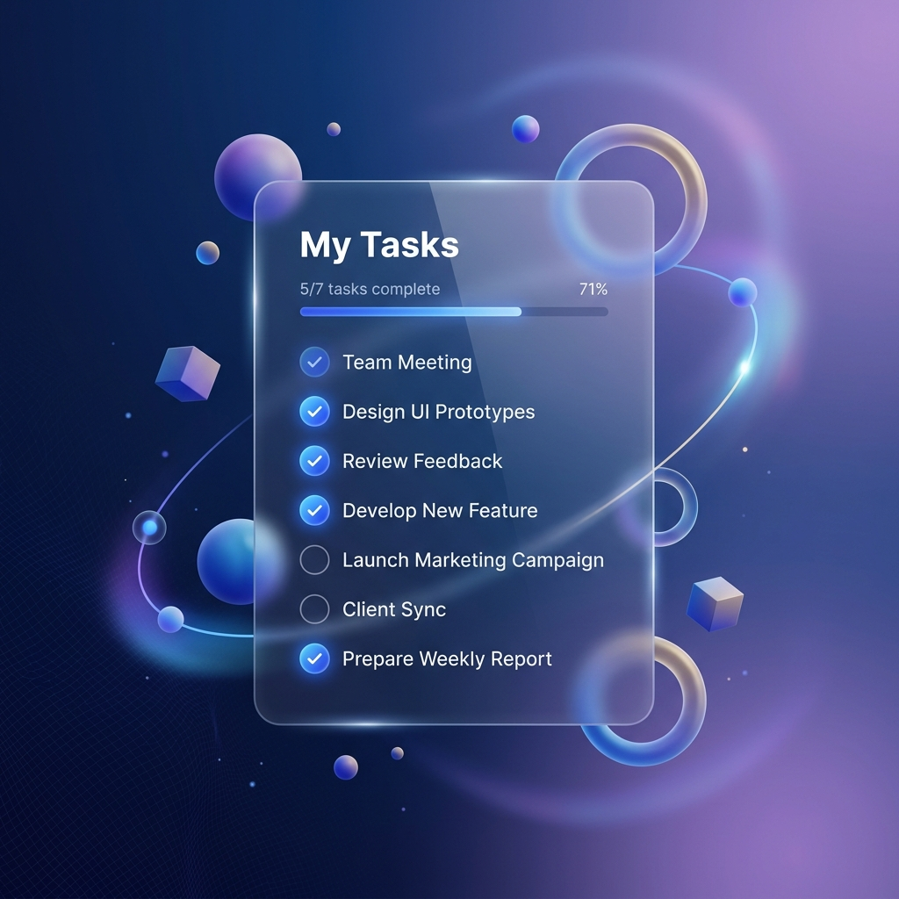

Satu tempat untuk semua tugasmu. Tetap terorganisir, tetap produktif. Kelola aktivitas sehari-hari dengan mudah dan elegan.

Catat dan kelola semua tugas Anda dalam antarmuka yang bersih dan bebas gangguan. Jangan biarkan ide atau tugas penting terlewatkan.
Tetapkan tingkat prioritas pada setiap tugas (Tinggi, Sedang, Rendah) agar Anda selalu fokus pada hal yang paling penting terlebih dahulu.
Atur tenggat waktu (deadline) untuk setiap proyek Anda. Dapatkan gambaran jelas tentang apa yang harus diselesaikan hari ini dan ke depannya.